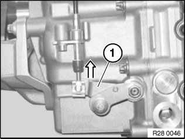
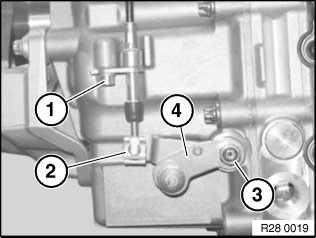

Shift Interlock: Service and Repair
24 .. ... Manually releasing parking lockFor various tasks, it is necessary to unlock and lock the parking lock.
This can be done from inside the passenger compartment or underneath the vehicle.
From passenger compartment:
^ Refer to Manual emergency unlocking of parking lock.

Underneath vehicle:
^ Remove underbody protection
^ Press lever (1) upwards.
Lock:
^ Release lever (1).

If permanent unlocking is desired
^ Release screw (1).
^ Unlock retainer (2).
^ Release cable from operating lever (4).
^ Tie up operating lever (4) with cable strap.
Locking:
^ Unfasten operating lever (4) and secure cable.